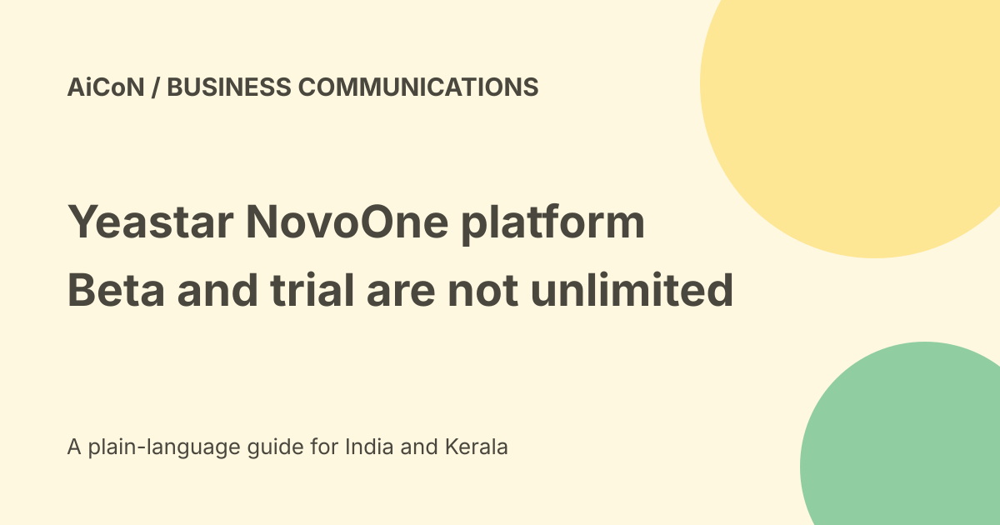

Yeastar NovoOne: public beta and thirty-day trial limits
Yeastar describes NovoOne as an AI-native, multi-tenant communications platform for service providers. Its product page invites public beta testing. A separate current help page documents a thirty-day free hosted-service trial with specific limits. Neither is a promise of free unlimited business calling.

Who it is for
NovoOne is aimed at providers delivering communications to multiple business customers. Each tenant is a separate customer environment within the platform.
This is not a consumer phone app or a free replacement for a personal mobile plan. Providers must still plan customer onboarding, support, telephone numbers, network access and the relevant service contracts.
The platform claims
Yeastar describes a Kubernetes-native microservices design with scaling, load balancing, automatic failover and rolling updates. It also describes cross-site redundancy with minute-level recovery targets.
These are vendor architecture and resilience claims. They do not establish an independently tested uptime result, an agreed SLA or a guarantee that every tenant experiences zero interruption.
White label and AI
The product page names white-label branding, cross-platform apps and REST API programmability. It describes AI assistance and voice agents for transcription, summaries and frontline interactions.
Brand control does not remove the provider's responsibility for accurate transcripts, privacy and customer support. A call summary can omit an instruction or confuse speakers. Review important facts before acting.
Public beta versus hosted trial
The product page says the public beta can be explored through a tailored one-to-one demo. That is a discovery route, not proof of immediate self-service access for every visitor.
The hosted-service help page says Yeastar offers thirty days free before subscription. These are separate descriptions. Confirm which offering, version and conditions apply to you instead of assuming a beta label overrides the trial limit.
Documented trial allowances
- Twenty users.
- Call recording for twenty users, with one month listed.
- One white-label template.
- Transcription for one user.
- Sixty AI receptionist minutes for each tenant, one-time.
- Thirty-day validity, listed as free.
The commercial column lists an annual paid subscription starting from five hundred users. It also lists purchasable AI minute packs or a monthly rolling plan. A commercial price amount is not shown in the checked table.
How a provider can evaluate
- Confirm whether you need hosted service or another deployment option.
- Read the current trial and commercial terms.
- Check partner-portal eligibility and account ownership.
- Choose a small authorised test tenant.
- Confirm telephone and AI usage charges separately.
- Test routing, recording and transcript quality.
- Review access separation between tenants.
- Test failure recovery against a written target.
- Plan export and deletion before the trial ends.
The published trial guide uses Yeastar Partner Portal and product assignment. We did not sign in, request a demo, allocate a product or send onboarding emails.
Recovery targets need a contract
RTO is a target for restoring service. RPO concerns the amount of recent data that could be lost. Minute-level wording is not enough to decide whether a business's needs are met.
Ask which failures the target covers, who operates redundancy and how recovery is measured. Keep a fallback communications plan for outages.
India, cost and telecom checks
The sources do not establish an India deployment location, SIP-trunk tariff, telephone-number entitlement or compliance approval for a particular provider.
Check hosting, carrier charges, AI minute costs, recording storage, support and renewal. No final INR quote or cancellation cost was verified. Yeastar's claim that total cost decreases with scale is not a tested saving for your business.
Privacy and tenant boundaries
Calls and recordings can contain personal, health or financial details. Establish consent and permitted retention, and restrict each tenant's access.
A white-label screen can still rely on external infrastructure and subprocessors. Check the actual contract, data location and deletion controls rather than treating branding as a privacy guarantee.
What changed since the original post?
We add the documented hosted-trial limits, distinguish the beta/demo invitation and retain resilience and cost claims as vendor statements.
Frequently asked questions
Is NovoOne free forever?
The checked hosted-service guide lists thirty days, then paid commercial service.
Are AI minutes unlimited?
No. The trial table gives a one-time allowance.
Was failover tested?
No.
Sources: Official product and public beta · Official hosted trial limits. Checked 7 October 2026.